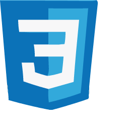

Education
Makers Academy
(March 2020 - July 2020)
- OOP, TDD, MVC, DDD
- Agile Development Process
- Ruby, Sinatra, JavaScript, Node, MongoDB, PostgreSQL
- RSpec, Jasmine, Capybara, Jest, Cypress
University of Westminster
(September 2016 - July 2017)
- Grade: Merit
- Masters: Audio Technology, Applicable Courses: Audio-Visual works on Games (WWise Software), Adobe XD from App Prototypes, Short Films and Animations
- Utilised WWise, Logic & Protools Sound Interfaces
- Use of XD and Adobe Animate for constructing application prototypes
- Part time job at Ashbourne Private School in Kensington
University of Birmingham
(September 2012 - July 2015)
- Grade: 2:1
- Degree: English Literature and Philosophy, Applicable Courses: Logic and Deductivism, Politics and Philosophy
- Dissertation: 'Literature as a Discriminative or Biased Force when presenting a Disabled Character.'
- Captained the Girls Squash Team - BUCS Champions
- Had a radio show called “Blondies Breakfast” on Burn FM (Birmingham Radio Station)
- Writer for the University Tab
- Part time job at the Student Union
Lizzie Turney
Junior Software Developer
Junior full-stack developer with an entrepreneurial flair for producing creative applications! I'm best described as a bubbly, carbonara-lover, who never falters from being optimistic. Friends and colleagues consider me to be a very strong communicator from my time in financial sales. I have experience in front-end, back-end, test-driven and database technologies, but lean towards front-end design due to the scope of creativity it allows. However, I enjoy all aspects of a full-stack codebase and embrace every opportunity to improve my skills.
Tech Stack
- React, JavaScript, HTML, CSS, Bootstrap, JQuery
- Node, Sinatra, MongoDB, PostgreSQL, mySQL
- RSpec, Jest, Jasmine, Capybara, Cypress

Contact Details
LTurns
Lizzie Turney
Lizzie Turney
lizzieturney@gmail.com
CV made with: Bootstrap, CSS and HTML.
Employment History
Goji Financial Services
(May 2019 - March 2020)
Senior Operations Executive
- Consulted with Investment Manager Clientele on a daily basis
- Used SQL to compile Redash data reports
- Experience in CSS and HTML for drafting email templates in Mandril
- Processed due diligence (KYC, KYB, AML) for international, corporate and retail investors
- Prepared the CASS reconciliation and processed large client money movements
- Trained Junior Executives
Leyton UK
(January 2018 - May 2019)
Major Accounts Manager
- In charge of international cross-selling initiative for UK office
- Developed a deeper understanding of R&D Tax and other UK tax schemes
- Sold the optimisation of R&D Tax Claims to prospects
- Pitched our tax services to FTSE clients and large enterprises (over SMEs)
- Trained Junior Sales Executives
- Interviewed future employees
Commercial Executive
- Found prospective clients
- Pitched our tax services
- Achieved monthly metrics and targets
- Maintained sales momentum